Skyfall-GS Synthesizing Immersive 3D Urban Scenes from Satellite Imagery
ECCV 2026
TL;DR: Skyfall-GS converts satellite images to explorable 3D urban scenes using diffusion models, with real-time rendering performance.
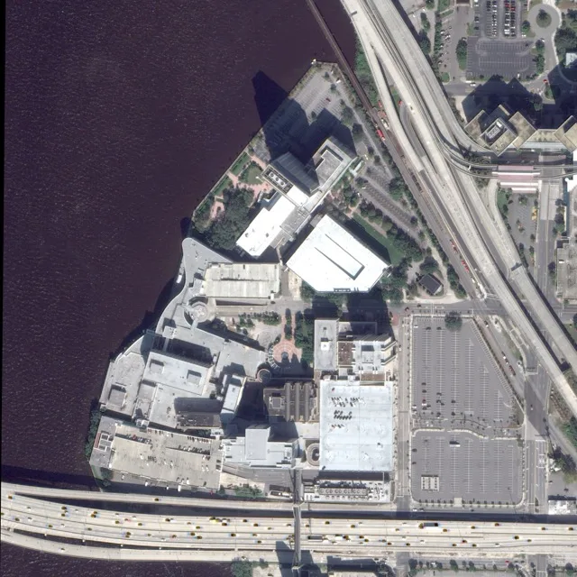
1National Yang Ming Chiao Tung University 2UIUC 3University of Zaragoza 4UC Merced
Interactive 3DGS Viewer
Explore our 3D Gaussian Splatting results interactively. Click on the scene buttons below to switch between different urban scenes. Use your mouse to freely navigate within each scene, and use WASD keys for fly navigation. Click the information button in the viewer for more controls.
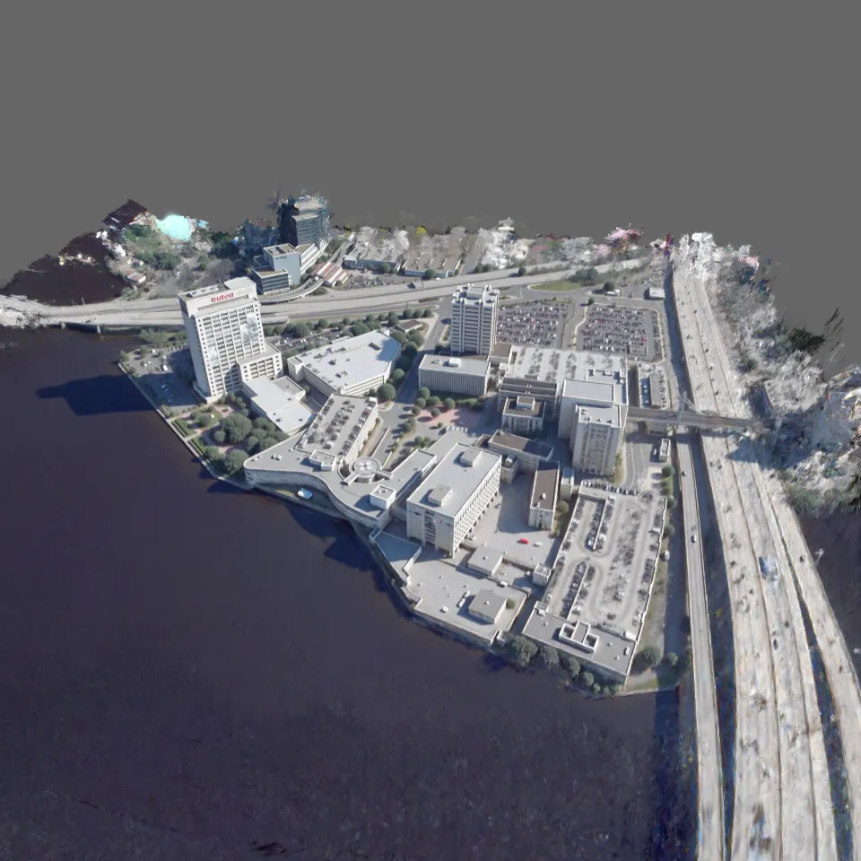
Jacksonville
NYC
From Satellite Images to Navigable 3D Cities
-
Start Where Reconstruction Is Reliable
Initial 3DGS renders degrade at lower elevations. We therefore begin with reliable high-elevation views and progressively descend as the scene improves.
-
Refine Renders with a Frozen Diffusion Prior
FlowEdit + FLUX.1 [dev] removes artifacts and completes disoccluded facades without fine-tuning. The refined views are then added back as training targets.
-
Repeat Refinement and Retraining
Each IDU episode improves geometry and fills missing textures while remaining anchored to the satellite observations.
Results
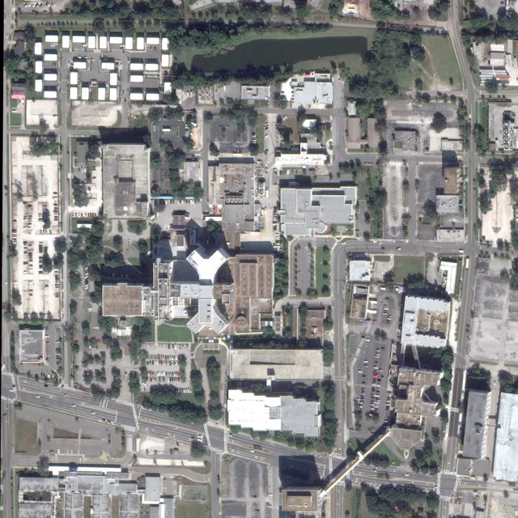
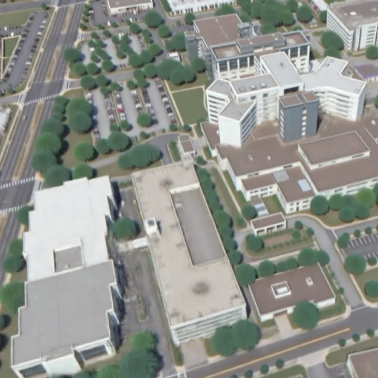
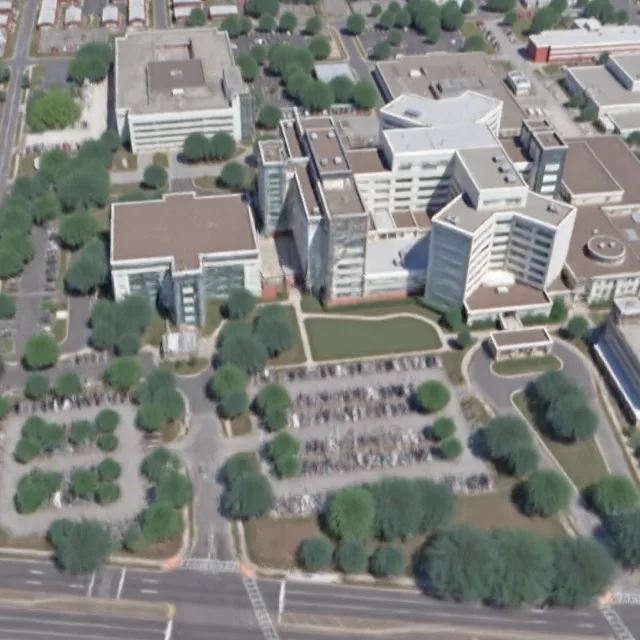
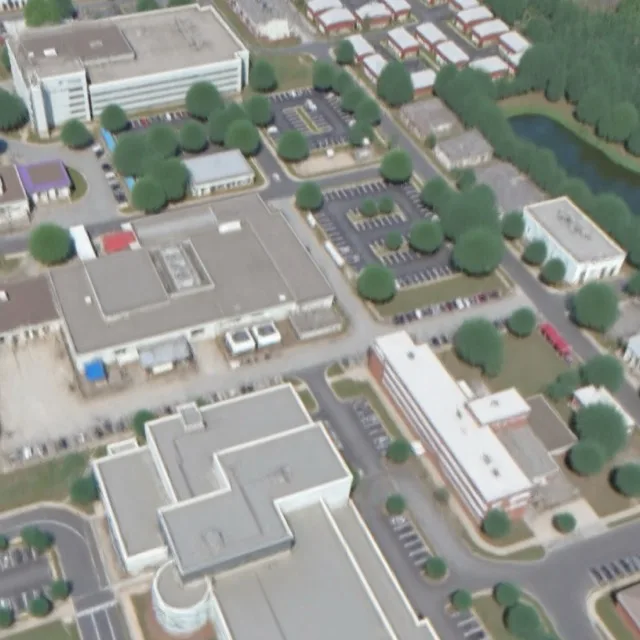
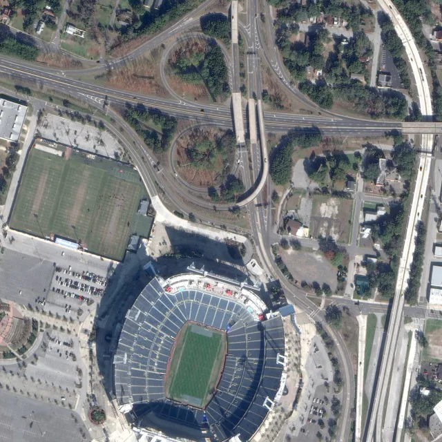
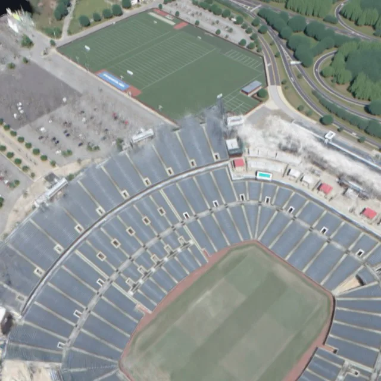
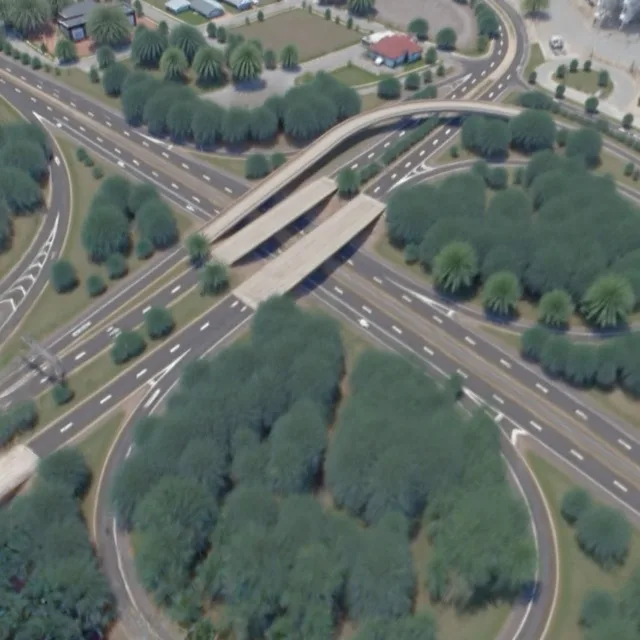
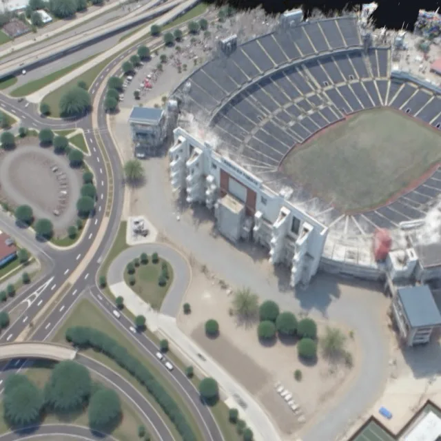
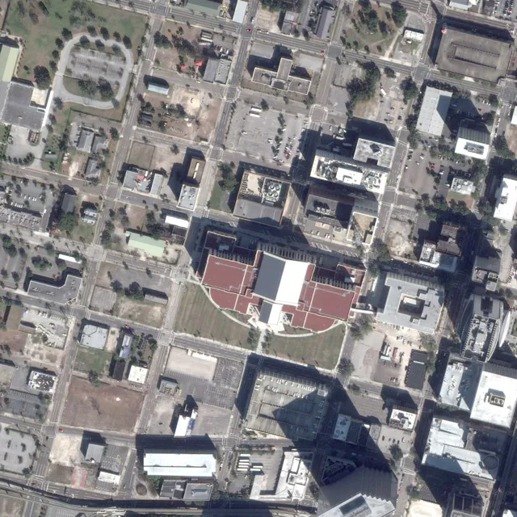
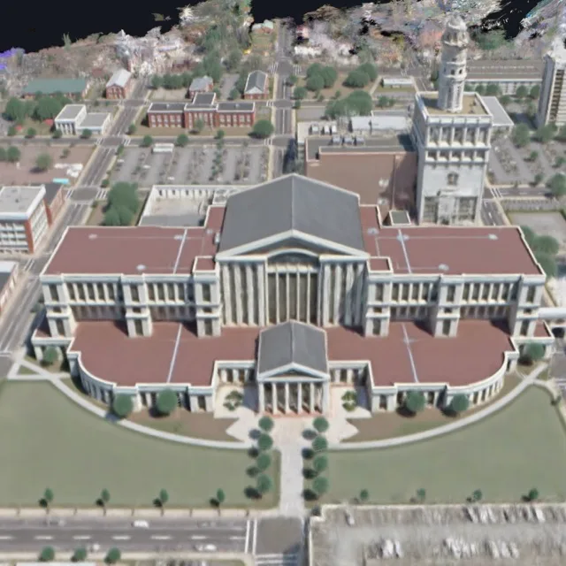
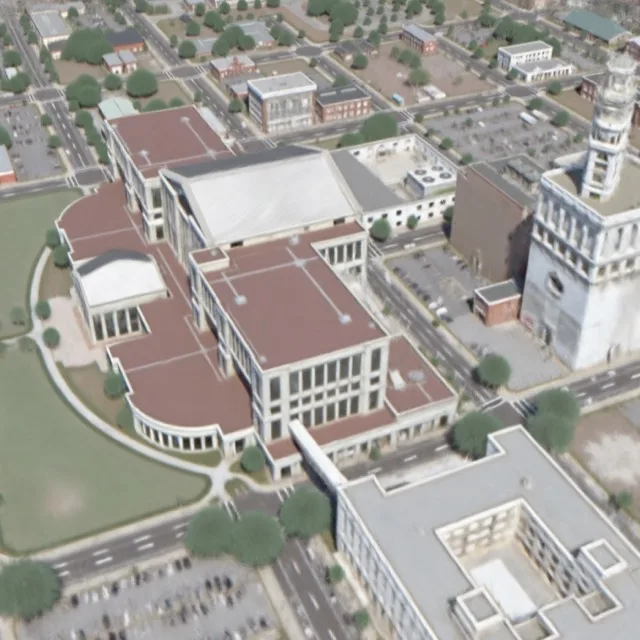
Visual Comparison
Quantitative Comparison
| Method | DFC2019 | GoogleEarth | |||||
|---|---|---|---|---|---|---|---|
| FIDCLIP ↓ | CMMD ↓ | FIDCLIP ↓ | CMMD ↓ | PSNR ↑ | SSIM ↑ | LPIPS ↓ | |
| 3D reconstruction | |||||||
| Sat-NeRF | 86.52 | 4.788 | – | – | – | – | – |
| EOGS | 87.67 | 5.291 | – | – | – | – | – |
| CoR-GS | 84.95 | 5.692 | 26.35 | 3.758 | 13.35 | 0.299 | 0.412 |
| Mip-Splatting† | 86.72 | 5.404 | 16.09 | 2.086 | 14.13 | 0.302 | 0.379 |
| City generation | |||||||
| CityDreamer | – | – | 36.66 | 4.200 | 12.58 | 0.267 | 0.558 |
| GaussianCity | – | – | 28.76 | 2.915 | 13.41 | 0.291 | 0.540 |
| Ours | 27.03 | 2.110 | 10.29 | 1.959 | 14.42 | 0.302 | 0.393 |
- 68% lower FIDCLIP: Skyfall-GS substantially outperforms the strongest 3D reconstruction baseline on DFC2019.
- Primary: FIDCLIP and CMMD measure perceptual distribution distance to the reference images.
- Secondary: Pixel metrics are limited by the lack of pixel-aligned facade ground truth.
- † Mip-Splatting enhanced with our appearance modeling.